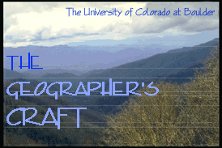

 |
-
The Global
Positioning System Overview, part of The Geographer's
Craft Project, written by Peter H. Dana, has been
selected as one of GIS World's eight "Best of the Net"
sites for 1996.
-
You are welcome to use and copy these
materials for education, but please credit the source
as: The Geographer's Craft,
Department of Geography, University of Colorado at
Boulder and cite the
individual author of the modules you use. All
commercial rights are reserved.
Send comments or suggestions to the principal
investigator: Dr. Kenneth
E. Foote at
k.foote@colorado.edu.
All Geographer's Craft materials were moved to the University of Colorado at Boulder during spring and summer 2000. The course is not presently offered at the University of Colorado, but the materials will kept online for use in other classes at CU and elsewhere.
1. General Information
Course Syllabus | Fall Semester Schedule | Spring Semester Schedule | Class Directory | Lab Teams | Directory of Lab Staff | Gradesheet | Guidelines for Laboratory Access and Use plus FAQ and Chat Room | Information about the Geographer's Craft Project | How to Enroll | Prerequisite Windows and Internet Quiz2. Lecture Notes, Laboratory Exercises, and On-Line Discussion
Lecture and Discussion Notes | Warm-up Exercises | On-Line Class Discussion Board | Sample Examination and Study Questions3. Internet Resources and Helpful Information
Internet Resources | GIS Bibliography from ESRI's Virtual Campus4. Class Projects in the Web
Class projects from the University of Texas at Austin have been taken offline.2001.10.4.
KEF.